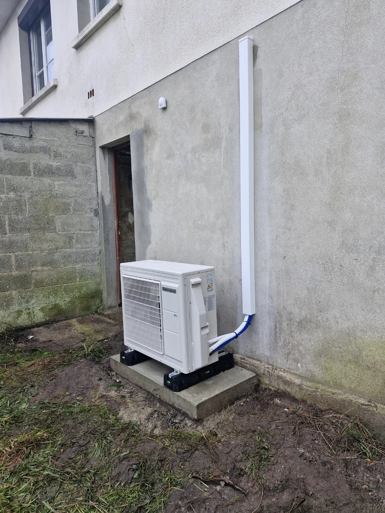

Étude et dimensionnement
Votre logement, ses besoins et vos émetteurs sont étudiés pour proposer une installation adaptée.
Chauffage · Manche & Calvados
Remplacer une chaudière fioul ou gaz, dimensionner une installation adaptée : Sébastien étudie votre logement et accompagne votre projet de chauffage.

Du conseil à la réalisation
Une étude adaptée et un devis selon votre logement.
Votre logement, ses besoins et vos émetteurs sont étudiés pour proposer une installation adaptée.
Dépose de l’ancienne chaudière fioul ou gaz et raccordements selon le projet et le devis.
Pose des équipements, raccordements et mise en service de votre installation.
Le projet peut aussi intégrer la production d’eau chaude et un ballon thermodynamique.
CEE, MaPrimeRénov’ et délégation de paiement sont étudiées selon votre dossier.
Sébastien étudie votre besoin, organise les rendez-vous et réalise l’installation.
Pour bien commencer
La solution dépend de votre logement, de son isolation, des radiateurs ou du plancher chauffant et des besoins en eau chaude. Sébastien prend le temps d’étudier ces éléments pour vous proposer un devis adapté.
Le travail de msplomberie
Photographies d’installations et de rénovation. Toutes les réalisations
Vos questions
Sébastien étudie ce type de remplacement. La faisabilité et le dimensionnement dépendent du logement, de ses besoins et de l’installation existante.
L’entreprise est basée à Périers. Sébastien se déplace dans la Manche et le Calvados selon le projet, notamment à Valognes, Saint-Lô et Granville. Précisez votre commune pour préparer l’échange.